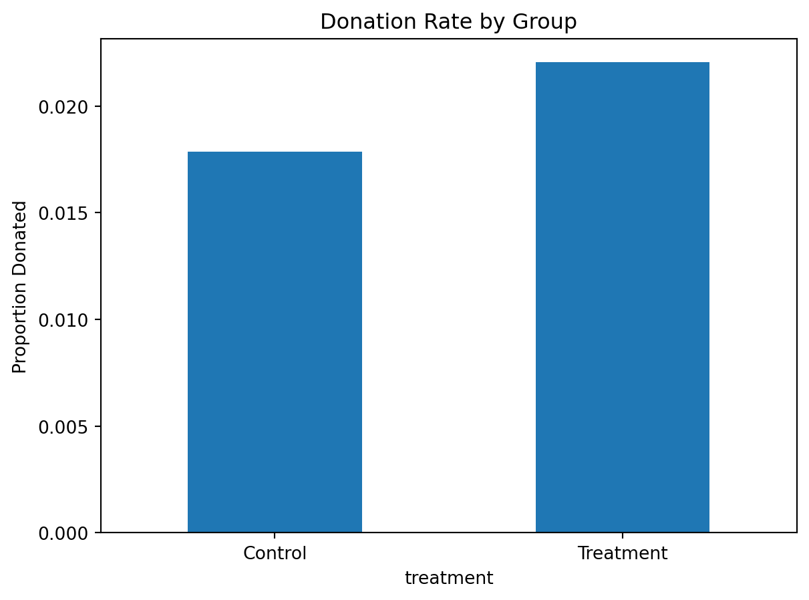
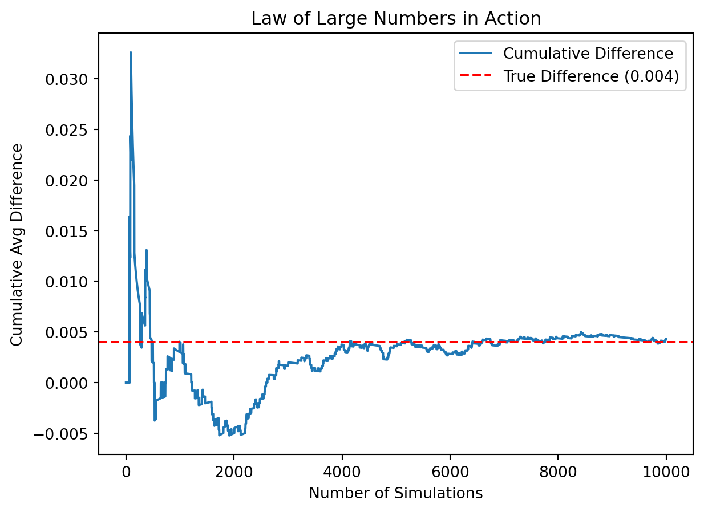

Dean Karlan at Yale and John List at the University of Chicago conducted a field experiment to test the effectiveness of different fundraising letters. They sent out 50,000 fundraising letters to potential donors, randomly assigning each letter to one of three treatments: a standard letter, a matching grant letter, or a challenge grant letter. They published the results of this experiment in the American Economic Review in 2007. The article and supporting data are available from the AEA website and from Innovations for Poverty Action as part of Harvard’s Dataverse.
The key experimental conditions included:
- A standard appeal letter (control group)
- A matching donation letter, where the organization promised to match donations at ratios of 1:1, 2:1, or 3:1
- A challenge grant letter, which emphasized reaching a target donation amount before a match would be triggered
The goal was to examine whether donors are more likely to give (and give more) when their donations are matched — and whether the size of the match ratio (e.g., 3:1 vs. 1:1) affects this behavior.
Their findings contributed to the literature on charitable giving by showing that matching gifts significantly increase response rates, though larger match ratios do not always yield proportionally larger effects.
This project seeks to replicate and explore these results using the original dataset provided by the authors. It will assess the impact of match treatments on both the likelihood and size of donations, using statistical tests and visualizations to mirror the findings of the original 2007 study.
Data
Description
todo: Read the data into R/Python and describe the data
Variable Definitions
Variable
Description
treatment
Treatment
control
Control
ratio
Match ratio
ratio2
2:1 match ratio
ratio3
3:1 match ratio
size
Match threshold
size25
$25,000 match threshold
size50
$50,000 match threshold
size100
$100,000 match threshold
sizeno
Unstated match threshold
ask
Suggested donation amount
askd1
Suggested donation was highest previous contribution
askd2
Suggested donation was 1.25 x highest previous contribution
askd3
Suggested donation was 1.50 x highest previous contribution
ask1
Highest previous contribution (for suggestion)
ask2
1.25 x highest previous contribution (for suggestion)
ask3
1.50 x highest previous contribution (for suggestion)
amount
Dollars given
gave
Gave anything
amountchange
Change in amount given
hpa
Highest previous contribution
ltmedmra
Small prior donor: last gift was less than median $35
freq
Number of prior donations
years
Number of years since initial donation
year5
At least 5 years since initial donation
mrm2
Number of months since last donation
dormant
Already donated in 2005
female
Female
couple
Couple
state50one
State tag: 1 for one observation of each of 50 states; 0 otherwise
nonlit
Nonlitigation
cases
Court cases from state in 2004-5 in which organization was involved
statecnt
Percent of sample from state
stateresponse
Proportion of sample from the state who gave
stateresponset
Proportion of treated sample from the state who gave
stateresponsec
Proportion of control sample from the state who gave
stateresponsetminc
stateresponset - stateresponsec
perbush
State vote share for Bush
close25
State vote share for Bush between 47.5% and 52.5%
red0
Red state
blue0
Blue state
redcty
Red county
bluecty
Blue county
pwhite
Proportion white within zip code
pblack
Proportion black within zip code
page18_39
Proportion age 18-39 within zip code
ave_hh_sz
Average household size within zip code
median_hhincome
Median household income within zip code
powner
Proportion house owner within zip code
psch_atlstba
Proportion who finished college within zip code
pop_propurban
Proportion of population urban within zip code
import pandas as pddf = pd.read_stata("karlan_list_2007.dta")print(df.shape)print(df.describe())
treatment control ratio ratio2 ratio3 size size25 size50 \
0 0 1 Control 0 0 Control 0 0
1 0 1 Control 0 0 Control 0 0
2 1 0 1 0 0 $100,000 0 0
3 1 0 1 0 0 Unstated 0 0
4 1 0 1 0 0 $50,000 0 1
size100 sizeno ... redcty bluecty pwhite pblack page18_39 \
0 0 0 ... 0.0 1.0 0.446493 0.527769 0.317591
1 0 0 ... 1.0 0.0 NaN NaN NaN
2 1 0 ... 0.0 1.0 0.935706 0.011948 0.276128
3 0 1 ... 1.0 0.0 0.888331 0.010760 0.279412
4 0 0 ... 0.0 1.0 0.759014 0.127421 0.442389
ave_hh_sz median_hhincome powner psch_atlstba pop_propurban
0 2.10 28517.0 0.499807 0.324528 1.0
1 NaN NaN NaN NaN NaN
2 2.48 51175.0 0.721941 0.192668 1.0
3 2.65 79269.0 0.920431 0.412142 1.0
4 1.85 40908.0 0.416072 0.439965 1.0
[5 rows x 51 columns]
Balance Test
As an ad hoc test of the randomization mechanism, I provide a series of tests that compare aspects of the treatment and control groups to assess whether they are statistically significantly different from one another.
Variables Tested
To verify the success of the random assignment, I conducted balance checks on two pre-treatment variables:
mrm2: months since last donation
freq: number of prior donations
These variables were tested using both t-tests and linear regression.
mrm2
from scipy import stats# NaN removaldf_clean = df[['treatment', 'control', 'mrm2']].dropna()# separate treatment and control groupstreat = df_clean[df_clean['treatment'] ==1]['mrm2']control = df_clean[df_clean['control'] ==1]['mrm2']# T-test t_stat, p_val = stats.ttest_ind(treat, control, equal_var=False)print(f"T-test result: t={t_stat:.3f}, p={p_val:.3f}")
T-test result: t=0.120, p=0.905
freq
import statsmodels.api as sm# freq: number of prior donationsdf_freq = df[['treatment', 'freq']].dropna()freq_treat = df_freq[df_freq['treatment'] ==1]['freq']freq_control = df_freq[df_freq['treatment'] ==0]['freq']t_stat_freq, p_val_freq = stats.ttest_ind(freq_treat, freq_control, equal_var=False)print(f"T-test (freq): t={t_stat_freq:.3f}, p={p_val_freq:.3f}")
T-test (freq): t=-0.111, p=0.912
Linear Regression
import statsmodels.formula.api as smf# Regressionresult = smf.ols('mrm2 ~ treatment', data=df_clean).fit()print(result.summary())
For both mrm2 and freq, we fail to reject the null hypothesis that the means are equal between the treatment and control groups. Both the t-tests and linear regressions produce p-values well above the 0.05 threshold, and the treatment coefficients are near zero.
This strongly suggests that the random assignment was successful in producing comparable groups at baseline. There is no evidence that individuals in the treatment group differed systematically in these pre-treatment characteristics.
Why This Matters (Table 1 Context)
Table 1 in Karlan & List (2007) presents these balance checks to demonstrate the integrity of the experimental design. By showing no significant differences between groups before treatment, the authors reinforce the internal validity of the study: any post-treatment differences in outcomes can reasonably be attributed to the treatment itself.
These balance tests provide strong evidence that randomization worked as intended. The treatment and control groups appear statistically equivalent on observed baseline characteristics, supporting causal inference in subsequent analyses.
Experimental Results
Charitable Contribution Made
First, I analyze whether matched donations lead to an increased response rate of making a donation.
import matplotlib.pyplot as plt# charity donation ratiodonation_rates = df.groupby('treatment')['gave'].mean()# bar plotdonation_rates.plot(kind='bar')plt.xticks([0, 1], ['Control', 'Treatment'], rotation=0)plt.ylabel('Proportion Donated')plt.title('Donation Rate by Group')plt.show()

import statsmodels.api as sm# NaN removaldf_clean = df[['treatment', 'gave']].dropna()# T-testgave_treat = df_clean[df_clean['treatment'] ==1]['gave']gave_control = df_clean[df_clean['treatment'] ==0]['gave']t_stat, p_val = stats.ttest_ind(gave_treat, gave_control, equal_var=False)print(f"T-test result: t = {t_stat:.3f}, p = {p_val:.3f}")# linear regression: gave ~ treatmentdf_clean['intercept'] =1model = sm.OLS(df_clean['gave'], df_clean[['intercept', 'treatment']])result = model.fit()print(result.summary())
T-test result: t = 3.209, p = 0.001
OLS Regression Results
==============================================================================
Dep. Variable: gave R-squared: 0.000
Model: OLS Adj. R-squared: 0.000
Method: Least Squares F-statistic: 9.618
Date: Thu, 01 May 2025 Prob (F-statistic): 0.00193
Time: 21:49:20 Log-Likelihood: 26630.
No. Observations: 50083 AIC: -5.326e+04
Df Residuals: 50081 BIC: -5.324e+04
Df Model: 1
Covariance Type: nonrobust
==============================================================================
coef std err t P>|t| [0.025 0.975]
------------------------------------------------------------------------------
intercept 0.0179 0.001 16.225 0.000 0.016 0.020
treatment 0.0042 0.001 3.101 0.002 0.002 0.007
==============================================================================
Omnibus: 59814.280 Durbin-Watson: 2.005
Prob(Omnibus): 0.000 Jarque-Bera (JB): 4317152.727
Skew: 6.740 Prob(JB): 0.00
Kurtosis: 46.440 Cond. No. 3.23
==============================================================================
Notes:
[1] Standard Errors assume that the covariance matrix of the errors is correctly specified.
There is a statistically significant difference in donation rates between groups. The treatment group had a higher likelihood of donating, and the p-value indicates this difference is unlikely to be due to chance.
The regression confirms the t-test: being in the treatment group increases the donation probability by 0.42 percentage points. Though small in magnitude, this effect is statistically significant, indicating that matched donations encourage giving.
The positive and significant coefficient from the probit regression supports the earlier findings: Being offered a matching donation increases the probability of giving. This matches Table 3, Column 1 in Karlan & List (2007), confirming the replication.
Human Behavior Insight
These results show that even a small external incentive — like a matching donation — can nudge people toward giving. It reinforces the idea that donors are influenced not just by personal motivation, but also by context and structure of giving opportunities.
Differences between Match Rates
Next, I assess the effectiveness of different sizes of matched donations on the response rate.
# 1:1 vs 2:1t1 = df[df['ratio'] ==1]['gave'].dropna()t2 = df[df['ratio2'] ==1]['gave'].dropna()t_stat_1_2, p_val_1_2 = stats.ttest_ind(t1, t2, equal_var=False)# 2:1 vs 3:1t3 = df[df['ratio3'] ==1]['gave'].dropna()t_stat_2_3, p_val_2_3 = stats.ttest_ind(t2, t3, equal_var=False)print(f"1:1 vs 2:1 → t = {t_stat_1_2:.3f}, p = {p_val_1_2:.3f}")print(f"2:1 vs 3:1 → t = {t_stat_2_3:.3f}, p = {p_val_2_3:.3f}")
1:1 vs 2:1 → t = -0.965, p = 0.335
2:1 vs 3:1 → t = -0.050, p = 0.960
There is no statistically significant difference in donation rates between the 1:1 and 2:1 match groups, or between 2:1 and 3:1 groups. These results suggest that increasing the match ratio does not meaningfully affect whether people donate.
Controlling for other match types, 2:1 and 3:1 match ratios are statistically significant predictors of giving — and lead to ~0.48–0.49 percentage point increases in donation rate compared to the baseline. However, the magnitude of the difference between match levels is small and likely not practically meaningful.
While increasing the match ratio leads to slightly higher donation rates, the marginal gains from going beyond 1:1 are extremely small. This aligns with the paper’s “figures suggest” comment — indicating that larger matches might not be more effective in practice.
These results show that although higher match ratios appear to encourage slightly more giving, the differences are tiny and inconsistent. The data suggest that simply offering a match (vs. no match) matters, but offering bigger matches (e.g., 3:1 instead of 2:1) doesn’t have a clear benefit. People may be motivated by the presence of a match, but not necessarily its size.
Size of Charitable Contribution
In this subsection, I analyze the effect of the size of matched donation on the size of the charitable contribution.
import statsmodels.formula.api as smfresult_amt = smf.ols('amount ~ treatment', data=df).fit()print(result_amt.summary())
Being in the treatment group is associated with an average donation increase of ~$0.15, but this result is not statistically significant at the 5% level (p ≈ 0.06). This suggests weak evidence that the matching offer may slightly increase giving amounts on average, but the effect is small and uncertain.
Among people who did give, being in the treatment group is associated with a slightly lower donation, but the difference is not statistically significant. This means the matching offer does not appear to increase the size of donations from those already motivated to give.
Both treatment and control groups have right-skewed donation distributions (long tail of large donations). The average donation is marked with a red dashed line on each plot. Visually, the distributions are very similar, supporting the regression results.
These results suggest that:
Offering a match may make someone slightly more likely to give,
But it does not meaningfully affect how much they give.
This implies that match offers work more by encouraging action, not by increasing generosity among existing donors. In other words: people give because of the match — not more because of the match.
Simulation Experiment
As a reminder of how the t-statistic “works,” in this section I use simulation to demonstrate the Law of Large Numbers and the Central Limit Theorem.
Suppose the true distribution of respondents who do not get a charitable donation match is Bernoulli with probability p=0.018 that a donation is made.
Further suppose that the true distribution of respondents who do get a charitable donation match of any size is Bernoulli with probability p=0.022 that a donation is made.
Law of Large Numbers
import numpy as npimport matplotlib.pyplot as plt# seednp.random.seed(42)# difference between 10_000 samplesn_total =100000control = np.random.binomial(1, 0.018, n_total)treatment = np.random.binomial(1, 0.022, 10000)# slicingcontrol = control[:10000]# difference from each sampledifferences = treatment - control# cumulative averagecumulative_avg = np.cumsum(differences) / np.arange(1, 10001)# plotplt.plot(cumulative_avg, label='Cumulative Difference')plt.axhline(0.004, color='red', linestyle='--', label='True Difference (0.004)')plt.xlabel('Number of Simulations')plt.ylabel('Cumulative Avg Difference')plt.title('Law of Large Numbers in Action')plt.legend()plt.show()

The cumulative average of the donation rate difference converged toward the true difference of 0.004, confirming the Law of Large Numbers in practice.
As the sample size increased, the distribution of the mean difference became more tightly centered around the true value and more bell-shaped, illustrating the Central Limit Theorem. Zero moved from being near the center (at small n) to clearly in the tail (at larger n), showing the power of sample size in detecting treatment effects.